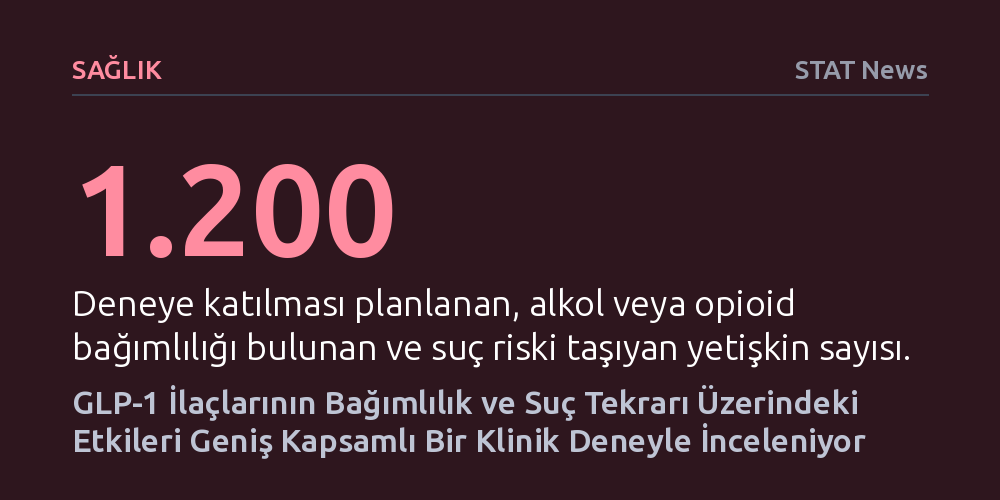

SAGLIK · STAT News · 2026-10-15
Pittsburgh'daki araştırmacılar, GLP-1 ilacı Wegovy'nin alkol ve opioid bağımlılığı ile suç tekrarını azaltmadaki etkisini 1.200 kişi üzerinde test edecek. 2027 başında başlayacak çalışma, zayıflama ilaçlarının biyolojik etkilerinin ötesine geçerek istihdam ve barınma gibi sosyal sonuçlarını ölçen ilk deney olacak.
Obezite ve diyabet tedavisinde çığır açan GLP-1 ilaçlarının, beynin ödül sistemini etkileyerek bağımlılık, suç ve istihdam gibi karmaşık toplumsal sorunların çözümünde de tıbbi bir araç olarak kullanılabileceğini gösteriyor.

Son yıllarda kilo verme ve diyabet tedavisinde küresel bir dönüşüm yaratan GLP-1 reseptör agonistleri, şimdi tıbbi endikasyonlarının çok ötesinde bir alanda teste tabi tutuluyor. Pittsburgh'daki araştırmacılar, bu ilaçların sadece vücut ağırlığını kontrol etmekle kalmayıp, bağımlılık döngülerini kırarak bireylerin sosyal yaşantısını kökten dönüştürüp dönüştüremeyeceğini inceleyen çığır açıcı bir klinik çalışma başlatıyor.
Geleneksel klinik çalışmalar genellikle kilo kaybı, kan şekeri veya kalp-damar sağlığı gibi biyobelirteçlere odaklanırken, bu yeni girişim doğrudan insan hayatının toplumsal dinamiklerini hedef alıyor. Araştırmacılar, ilacın ceza adaleti sistemiyle karşı karşıya kalma riskini azaltmanın yanı sıra istihdam olanaklarını ve barınma istikrarını iyileştirip iyileştiremeyeceğini somut verilerle ortaya koymayı amaçlıyor.
Böylece tıp dünyasında ilk kez, modern bir farmakolojik müdahalenin yalnızca bireysel sağlık üzerinde değil, doğrudan ceza adaleti, suç oranları ve kamu refahı gibi geniş toplumsal ölçekte yaratacağı sonuçlar sınanmış olacak.
Çalışma, kâr amacı gütmeyen Bağımlılık Bilimi, Politika ve Araştırma Merkezi (CASPR) ile Allegheny İlçesi İnsani Hizmetler Departmanı ortaklığıyla yürütülüyor. 2027 yılının başlarında başlatılması planlanan deneye, alkol kullanım bozukluğu, opioid kullanım bozukluğu veya her ikisine birden sahip olan ve adli sisteme girme riski yüksek 1.200 yetişkin dahil edilecek.
Katılımcıların yarısına rastgele seçim yöntemiyle Novo Nordisk firmasının ürettiği Wegovy verilecek, diğer yarısı ise kontrol grubunda yer alacak. Düzenli takip sürecinde katılımcıların madde kullanım düzeyleri, yasal sorunlarla karşılaşma sıklıkları, iş bulma ve barınma durumları titizlikle kaydedilerek ilacın toplumsal entegrasyona katkısı ölçülecek.
GLP-1 ilaçlarının beynin ödül ve haz mekanizmalarında rol oynayan dopamin yollarını etkilediği ve böylece yalnızca yeme dürtüsünü değil, alkol, nikotin ve madde arayışını da baskıladığı yönündeki bilimsel gözlemler giderek artıyor. Deneyin olumlu sonuçlanması, madde bağımlılığına bağlı suç davranışlarının irade eksikliğinden ziyade tıbbi ve nörobiyolojik yöntemlerle tedavi edilebilecek bir sağlık sorunu olduğu tezini güçlendirecek.
Bu durum, kamu bütçelerinin kullanımında da köklü bir zihniyet değişikliğini tetikleyebilir. Cezaevi inşaatları ve adli kovuşturmalara harcanan devasa kamu kaynaklarının, suç oranlarını düşürmek amacıyla doğrudan bağımlılık önleyici biyomedikal tedavilere yönlendirilmesi, ceza adaleti politikalarında yeni bir dönemin kapısını aralayabilir.
Gündemin öne çıkan bir diğer gelişmesi ise Liquidia ile United Therapeutics arasındaki uzun soluklu patent savaşının küresel bir uzlaşmayla sona ermesi oldu. Pulmoner arteriyel hipertansiyon tedavisine odaklanan bu anlaşma, ölümcül akciğer hastalığıyla mücadele eden hastaların yenilikçi tedavi seçeneklerine daha hızlı ve engelsiz erişebilmesinin önünü açıyor.
Bunun yanı sıra biyoteknoloji dünyası, STAT'ın bulaşıcı hastalıklar alanındaki duayen muhabiri Helen Branswell'in vefatının derin üzüntüsünü yaşıyor. Sektör bir yandan önemli bilim insanlarını ve gazetecilerini anarken, diğer yandan bağımsız denetim kurullarının şeffaflığı ve yeni nesil ilaç keşifleri gibi kritik başlıklarda yoğun tartışmalara sahne olmayı sürdürüyor.